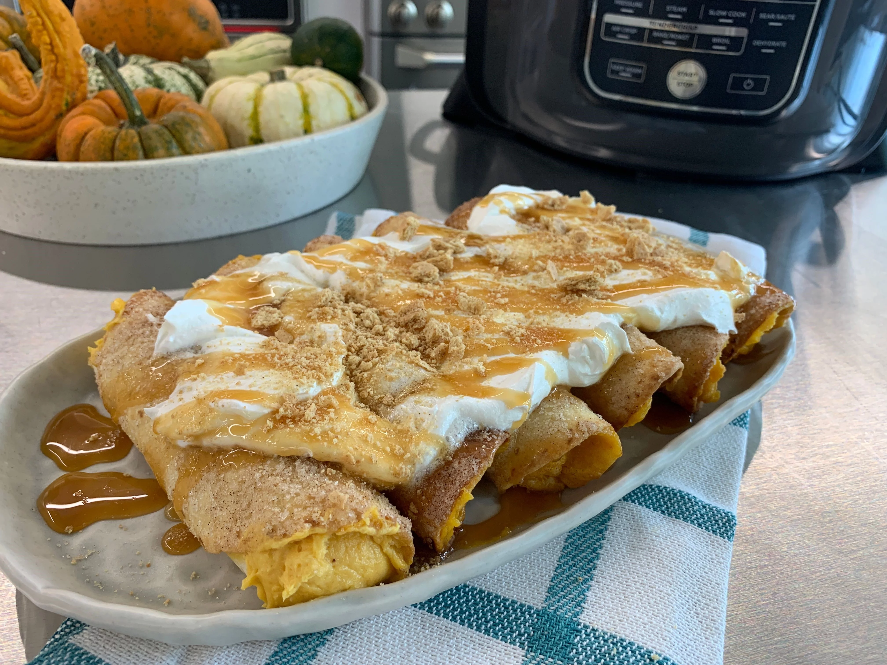

Pumpkin Cheesecake Enchiladas

Ingredients
- 1 (15 ounce) can pumpkin puree
- 2 (8 ounce) packages cream cheese, softened
- 0,75 cup white sugar
- 0,25 cup brown sugar
- 1 (3.4 ounce) package instant cheesecake-flavored pudding mix
- 2 teaspoons ground cinnamon, divided
- 0,25 teaspoon ground nutmeg
- 12 (6 inch) flour tortillas
- 0,25 cup unsalted butter, melted
- 1 (8 ounce) container whipped topping, thawed
- 0,33 cup caramel sauce
- 0,25 cup cinnamon graham cracker crumbs
Steps
- Line a sieve with paper towels and place over a bowl. Place pumpkin puree on the paper towels and cover the bowl with plastic wrap. Place in the refrigerator and allow to drain for 2 hours, or overnight.
- Beat cream cheese with an electric mixer until very smooth. Add 1/2 cup white sugar, brown sugar, pudding mix, 1 teaspoon cinnamon, and nutmeg and mix until well blended. Mix in drained pumpkin. Divide mixture among tortillas and roll them up.
- Combine remaining 1/4 cup sugar and 1 teaspoon cinnamon in a small bowl and stir until well combined.
- Brush each stuffed tortilla with melted butter and sprinkle with cinnamon-sugar mixture.
- Preheat an air fryer to 400 degrees F (200 degrees C).
- Place as many enchiladas in the preheated air fryer as will fit in a single layer with at least 1/4 of an inch in between. Air-fry until golden brown and lightly crisp, 3 to 5 minutes. Remove to a serving tray and let cool. Repeat to air-fry remaining enchiladas.
- Just before serving, top evenly with whipped topping, caramel sauce, and graham cracker crumbs.